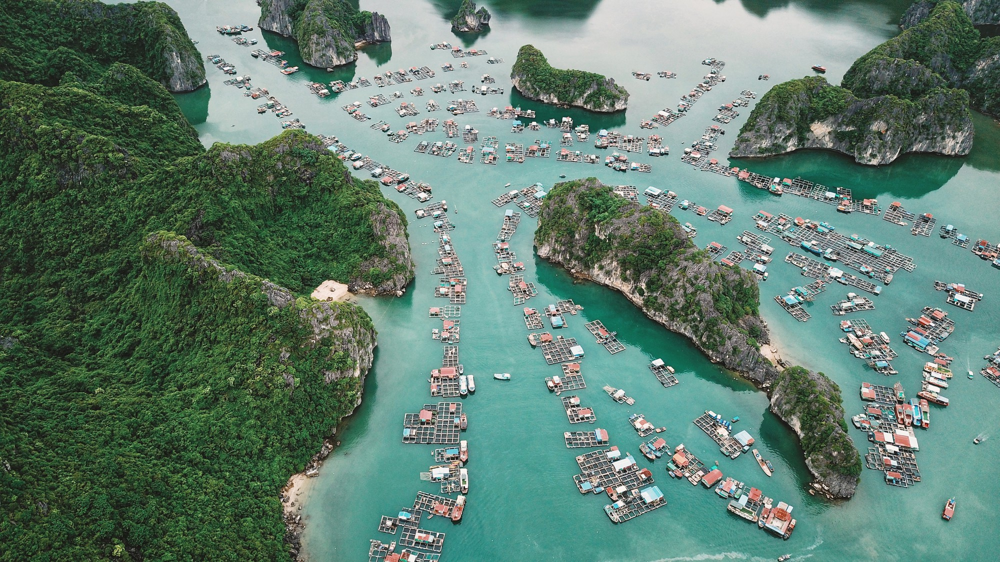
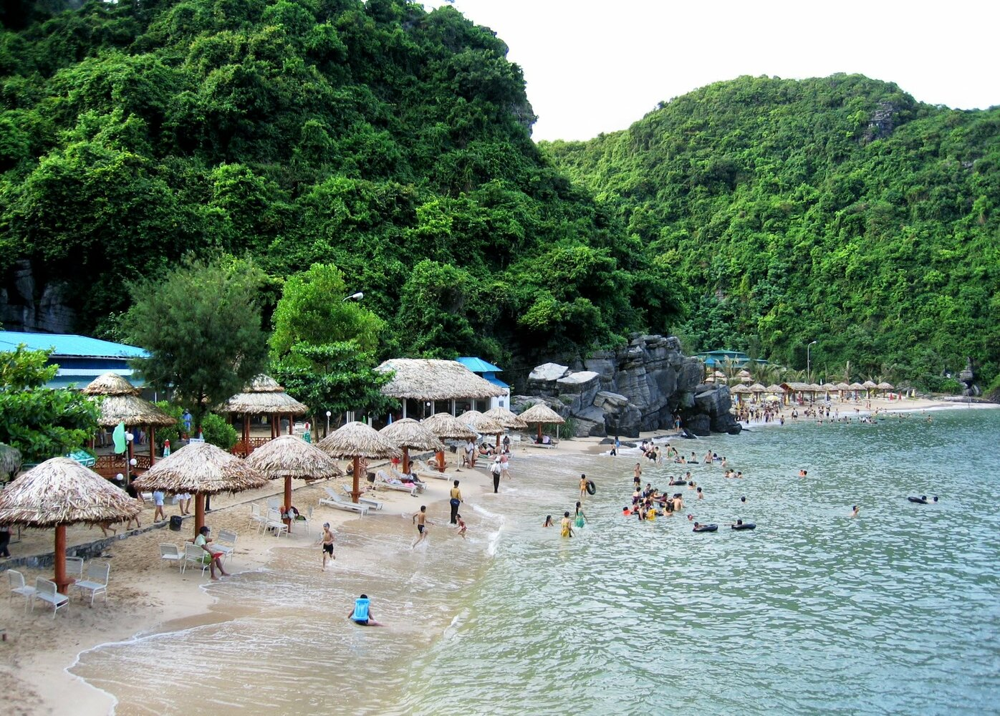

カブトガニ
Vietnamese Place

カットバ島へようこそ
June 06, 2020グローバルにエコナセイカツを過ごせる、ベトナムでハノイから一番近いビーチリゾートLAN HA（ランハー）湾とCAT BA （カットバ島）ハノイだってビーチに行きたい。
ハノイからカットバエクスプレスが便利
ハノイからの「カットバエクスプレス」はハノイからハイフォンを通り、カットバに近いカットハイ島からフェリーに乗り 換えてカットバ島につき、そこで再び別のバスに乗り換えてカットバタウンにつきます。それだけに、ハロン湾のように 簡単にはいけないところが、まだ観光客が多くなく、静かなビーチを楽しめます。「欧米のバックパッカー」たちはさすが に情報が早く多く来ています。誰でも行くところではなく、「欧米のバックパッカー」が多いところはやっぱり魅力があります。
 
カットバ島はハロン湾の横にあります
- フェリーから再びバスに乗り換えて「カットバタウン」につけば、そこがベースになります。地図でカットバ島の位置を見て もらうとわかるのですが、有名な2000を超える島や岩が存在する絶景、世界自然遺産のハロン湾のすぐ横、南側に位置することがわかります。
- ハロン湾は有名で、皆さんもよく知っていると思います。それだけに、観光客がたくさん訪れ、せっかく絶景世界自然遺産を楽しみに行ったのに、 人だらけで、がっかりされた方は多いと思います。
- しかも、せっかくの海なのに海で泳いで楽しむ場所は少なく、とりあえず回ったという感想の方がおおいのではないかと思います。ハロン湾クルーズ については他でもかいていますので、ご覧ください。
カヤックで石灰岩の洞窟を抜けラグーンに入れる
- 入江になっているところは長い年月で石灰岩が雨水で溶けた場所で、その場所が沈んだ地形です。そこでカヤックを楽しむこともできます。
- ホテル船で過ごす人以外は、まずカットバタウンに行けばいいです。 楽しみ方は、カットバタウンで、ホテルを探し、そこから周りの島にボート で遊びに行ったり、カットバタウンで、レンタルバイクを借りて、静かな入江にあるビーチリゾートに向うこともできます。
- 国立公園でのトレッキングツアーとか、ともかく、カットバタウンにつけば、ツアーディスクもいくつもあるので、自由に選べます。 カットバ の地ビールもあります。
人気の食べ物
ジオダック
ハタ
ロブスター
Cat Hai しょっつる